1 Introduction
The Safe Flight N1 Computer is a small panel instrument that tells you what fan speed to set. It reads ram air temperature and pressure altitude, looks up the flight manual’s thrust schedule, and shows the answer on a three-digit amber readout. A three-position knob picks the schedule: takeoff and go-around, maximum climb, or maximum cruise.
Safe Flight Instrument Corporation built it as the N1 COMPUTER/DISPLAY, part number C-12732-1. It was certified for the 525 under STC SA01872AT in 1999, as a factory option or a service center retrofit. The flight manual supplement that came with the installation calls it the SafeFlight N1 Reminder, and that supplement — Cessna Model 525, Section V, Supplement 6 — is where the behaviour recreated here comes from.
It is an advisory instrument, and its own FAA-approved supplement says so first: it is “a secondary means of computing approximate N1”, and “the primary means for determining N1 settings under all conditions is the FAA Approved Airplane Flight Manual.” It drives nothing — no bugs, no autothrottle, no link to the engine displays. It is not required equipment for any kind of operation.
This plugin recreates that box for the TorqueSim CitationJet 525 in X-Plane 12. It appears as a floating window you can move, resize and pop out, rather than as a clickable instrument in the 3D cockpit, so it works whichever seat or view you fly from.
2 Installation
Requirements
| Item | Requirement |
|---|---|
| Simulator | X-Plane 12.3.0 or later, 64-bit |
| macOS | 12.0 Monterey or later. Universal binary: Apple silicon and Intel. |
| Windows | Windows 10 or 11, 64-bit |
| Linux | A 64-bit distribution supported by X-Plane 12; Laminar Research tests against Ubuntu 20.04 LTS and later. |
| Aircraft | TorqueSim Take Command! CitationJet 525. The device is inactive in every other aircraft. |
Installing the plugin
Copy the SafeFlightN1 folder into your X-Plane 12
Resources/plugins/ directory, then restart the simulator. The folder
must keep its internal shape, because the plugin finds its charts and artwork
relative to the .xpl:
Inside plugins/SafeFlightN1/ | Contents |
|---|---|
mac_x64/SafeFlightN1.xpl | The plugin, macOS |
win_x64/SafeFlightN1.xpl | The plugin, Windows |
lin_x64/SafeFlightN1.xpl | The plugin, Linux |
data/ | Eight N1 schedule tables |
assets/ | faceplate.png, knob.png, layout.json |
The plugin goes in Resources/plugins/ rather than inside the aircraft
folder on purpose. The CJ525 is payware that updates itself, and an update that
replaced the aircraft folder would silently delete a plugin living there.
Note
On macOS, a plugin downloaded as an archive may be quarantined and X-Plane
will refuse to load it with no visible error. Clear the flag with
xattr -dr com.apple.quarantine "/path/to/SafeFlightN1".
Checking the installation
Load the CJ525 and open the Plugins menu. A Safe Flight N1 Computer submenu should appear with two items, Toggle N1 Computer Window and Pull N1 IND Circuit Breaker. Both are grayed out until the aircraft’s own systems have finished loading, which takes a few seconds after the flight starts.
If you want confirmation, Log.txt in your X-Plane folder will contain:
Loaded: .../Resources/plugins/SafeFlightN1/<platform>/SafeFlightN1.xpl
SafeFlightN1: CJ525 detected; resolving afm/cj datarefs
SafeFlightN1: afm/cj datarefs resolved; gate activeRemoving the plugin
Delete the SafeFlightN1 folder from Resources/plugins/.
The only file the plugin writes is settings.ini inside its own folder,
which remembers the window’s size and position; deleting it resets the window
to a centered default. Nothing is written elsewhere in your X-Plane installation.
3 Normal Procedures
Opening and placing the window
Open the device from Plugins → Safe Flight N1 Computer → Toggle
N1 Computer Window, or bind the sfn1/toggle_window command to
a key or button. It opens centered, about the size of the real 2.6-inch instrument.
The plate carries no title bar, so its corners do the work. Drag the plate anywhere off the knob and legends to move it. Drag a bottom corner — the pointer turns into a pair of arrows aimed at it — to resize it, and the faceplate keeps its proportions. The top-left corner shows a red cross: click it to put the device away. It pops out into a separate desktop window, follows you into VR, and returns wherever you left it next flight.
Controls
The unit has one control: a three-position rotary knob that also presses. The pointer says which is which: a push cursor over the knob itself, a turn cursor over each legend.
| Do this | And |
|---|---|
| Click the CLB or CRU legend | the knob steps one detent that way |
| Scroll over the knob | one detent per click of the wheel |
| Press and hold the knob | the display reads ram air temperature |
| Scroll while holding the knob | dials the selected temperature, 1 °C per click |
The knob does not wrap. Every action above is also available as a command you can bind to hardware; see section 7.
Power-up
The device wakes with the avionics. Turn the avionics master on with a live bus and the display shows 888 for five seconds — the supplement’s satisfactory self-test indication, though it does not say how long it stands — then settles to the target for whichever mode the knob is in.
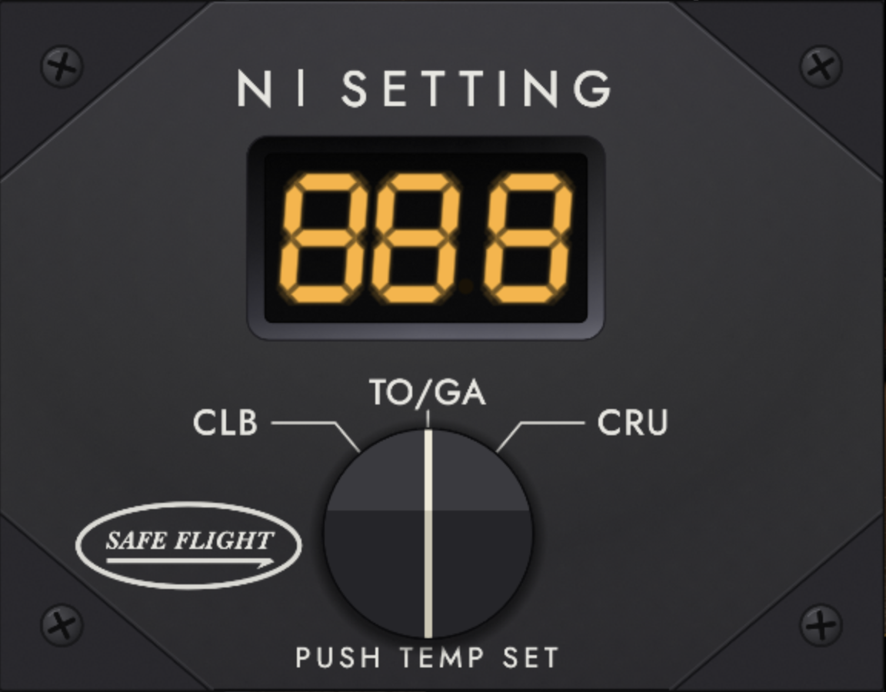
Before takeoff
Select TO/GA. On the ground the display reads the takeoff N1 for the current ram air temperature, the field pressure altitude, and the anti-ice configuration. Set that on the throttles for takeoff.
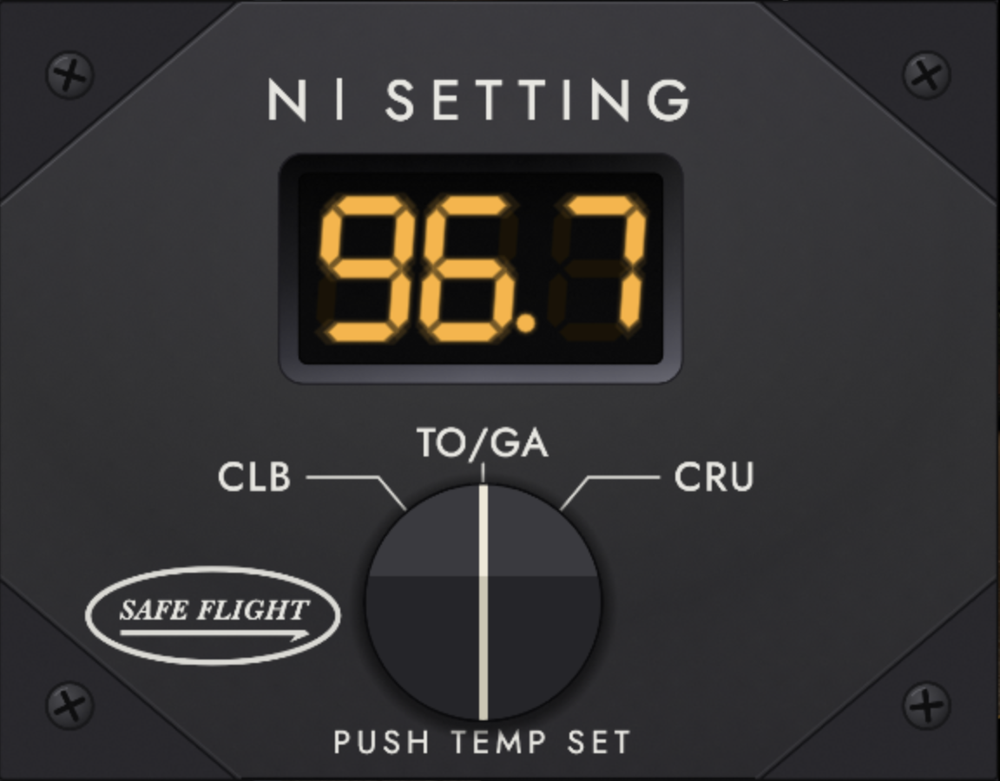
CLB and CRU mean nothing on the ground, so selecting either shows dashes as an invalid mode.
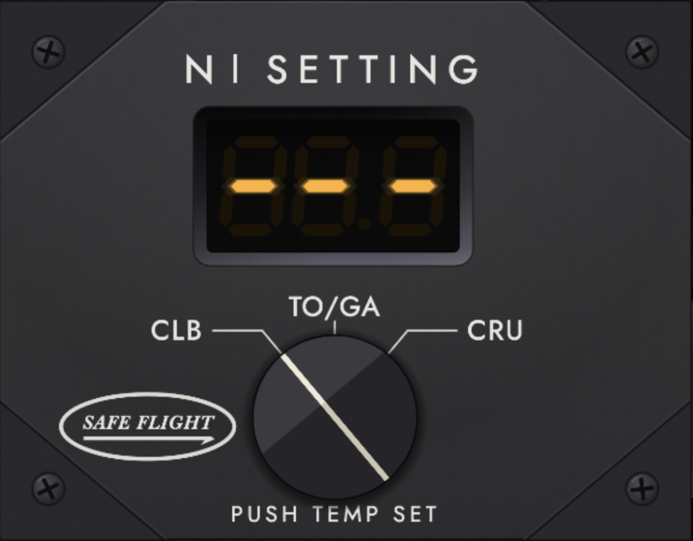
Setting an assumed temperature
Hold the knob down and the display swaps to the ram air temperature it is using, in whole degrees Celsius.
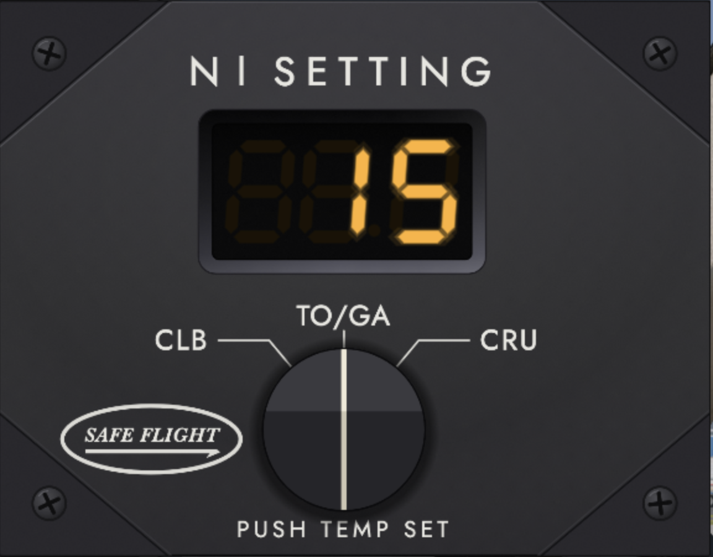
Scroll while holding to dial in a different temperature — the reported airfield temperature, say. The value blinks, marking it as yours rather than the sensed one.
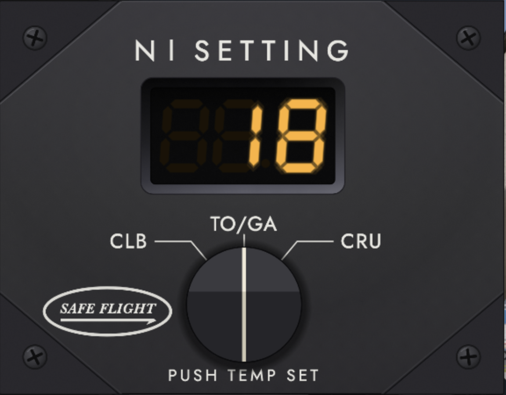
Release, and the display returns to takeoff N1 computed for that temperature. A selection cannot be made in flight, but it is not thrown away at liftoff either: see section 3.7.
Anti-ice
Anti-ice costs thrust, and the flight manual publishes a separate schedule for it. The device follows the aircraft’s switches with no input from you: with windshield bleed air and both WING/ENGINE anti-ice switches selected on, it reads from the anti-ice schedule.
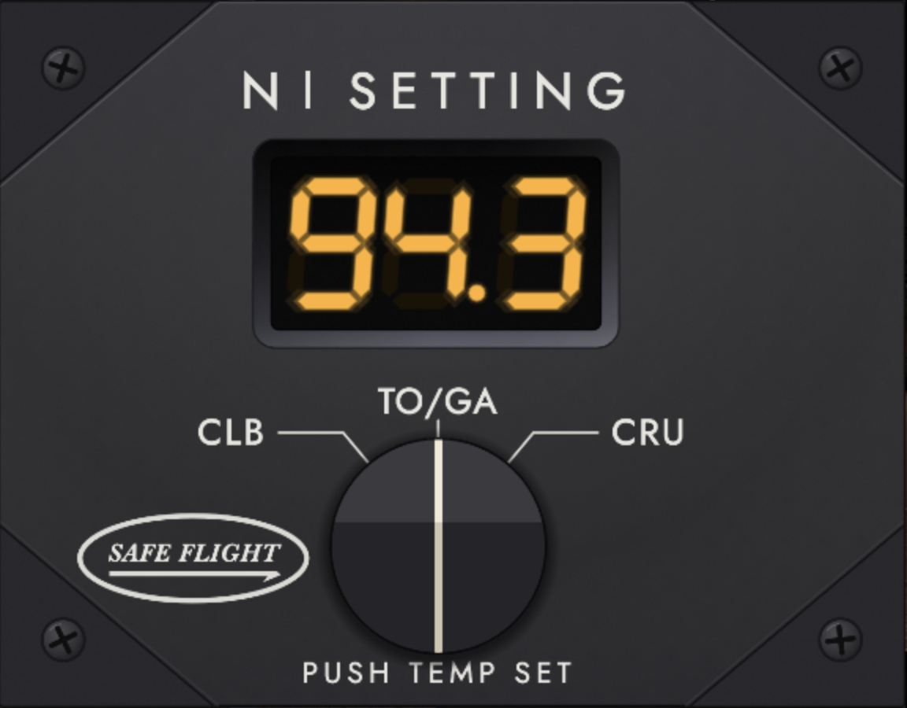
Caution
Anti-ice is all or nothing. If only some of the three systems are on, the display shows dashes rather than guess at a partial-bleed target. Turn the rest on, or turn them all off, and a number returns.
Climb and cruise
Leave the knob alone through the climb-out and the display keeps showing the takeoff target you set: the temperature you selected, or the one it sensed, against the field elevation you left. It is the number you rotated to, held steady, not a live recomputation — so it is still there to check against the throttles. Moving the knob is what ends it, and the selected temperature goes at the same moment.
Once airborne, select CLB for the recommended maximum climb setting. The device now works from sensed ram air temperature and pressure altitude, and it keeps recomputing: N1 rises with altitude, so expect to nudge the throttles up several times during the climb to hold the target.
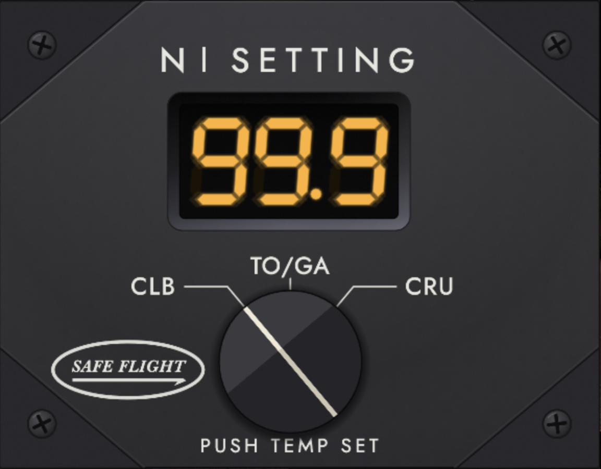
Level off and select CRU for the recommended maximum cruise setting. As the aircraft accelerates and ram rise pushes the temperature up, the target will move again.
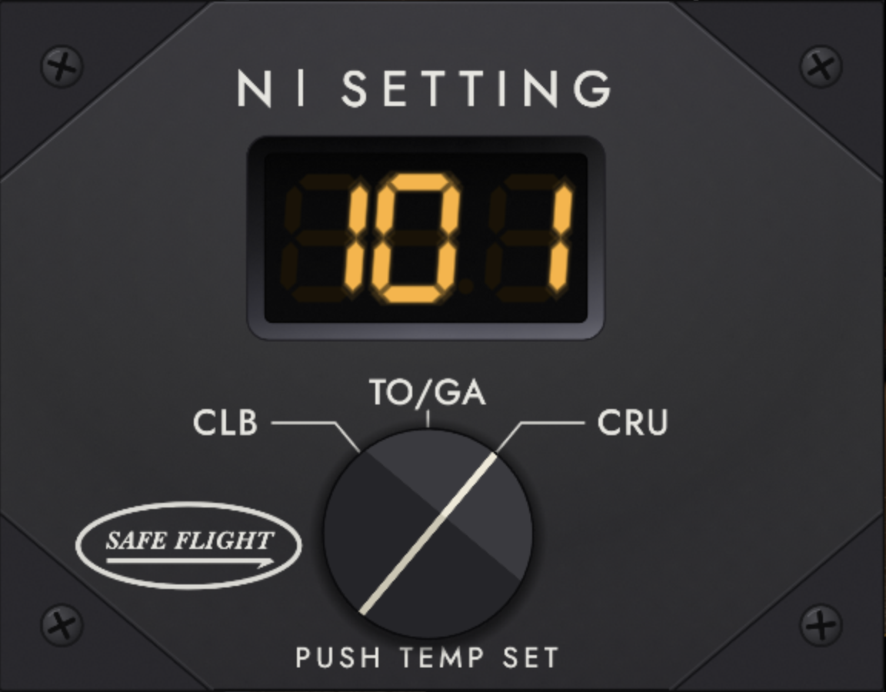
Approach and go-around
Descending through 15,500 ft, select TO/GA again. Coming back to it from CLB or CRU is what turns that position into go-around thrust, ready before you need it. Above 15,500 ft it shows dashes, because a go-around setting has no meaning up there.
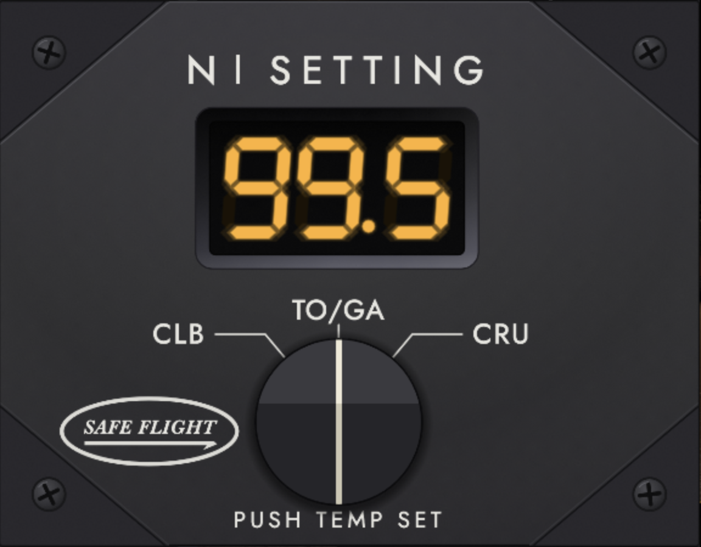
After landing
One minute after touchdown the display reverts to 888 and stands by. Press or turn the knob and it wakes immediately.
Display summary
| The display reads | Meaning |
|---|---|
| Nothing at all | Unpowered. No avionics bus, or the N1 IND breaker is pulled. |
| 888 | Self-test for five seconds after power-up, or standby a minute after landing. |
| ––– | No target: an invalid mode, partial anti-ice, or conditions off the chart. |
| 96.7 | The N1 target, in percent. |
| 101 | A target of 100 % or more, to the whole percent. The decimal point is unlit. |
| 15 | Ram air temperature, while the knob is held. |
| 18 blinking | The selected temperature you have dialed in. |
| Blank, but faintly lit | A failure. See section 5.7. |
4 Limitations
The device is advisory. It is a secondary means of computing an approximate N1. It drives nothing and is not linked to the engine instruments. The published performance charts remain the authority.
Normal, two-engine operation only. There is no single-engine schedule.
The charts have edges. Outside them the display dashes rather than extrapolating.
| Schedule | Pressure altitude | Temperature |
|---|---|---|
| Takeoff | Sea level to 7,000 ft | −25 to +40 °C |
| Go-around | Sea level to 7,000 ft | −30 to +40 °C |
| Maximum climb | Sea level to 41,000 ft | −45 to +45 °C |
| Maximum cruise | Sea level to 41,000 ft | −45 to +45 °C |
- Anti-ice schedules stop at +10 °C. No anti-ice data is published above that temperature, so with anti-ice on and a warm day the display dashes.
- FL410 sits exactly on the top line of the cruise chart, so the display may come and go there as altitude wanders.
- Go-around thrust is available at or below 15,500 ft. Above that ceiling the display dashes.
- A selected temperature is dialed on the ground only. It saturates at ±99 °C, cannot be changed in flight, and is released — along with the takeoff target it is holding — the first time the knob moves after liftoff.
- Resolution changes at 100 %. Below 99.95 % the readout shows tenths; at or above it shows whole percent with the decimal point unlit, because there are only three digits.
- Nothing carries across flights except the window position. The knob, any selected temperature and the breaker all return to their defaults when an aircraft loads.
Caution
The schedules are transcribed from the community-built TorqueSim Cessna Citation 525 Performance Manual by hornetaircraft and collaborators (see §8), not from Textron’s own charts. Two regions carry known uncertainty because the source pages disagree with themselves: the 2,000 ft go-around block and the 7,000 ft takeoff block.
5 Systems Description
The installation
On the real CitationJet the unit lives in the top row of the center instrument panel, just under the glareshield annunciators: right of the pilot’s encoding altimeter, left of the N1 tape at the head of the engine cluster, and directly above the standby attitude indicator. It is a shallow octagonal plate about 2.6 inches across, weighing well under a pound, with the amber readout above and the mode knob below.
What the device senses
Everything is taken from the aircraft; there is nothing to configure.
| Input | Used for |
|---|---|
| Ram air temperature | The temperature axis of every chart, and the readout when the knob is held |
| Pressure altitude | The altitude axis of every chart |
| Weight on wheels | Ground or airborne, which decides what each knob position means |
| Avionics master and bus voltage | Whether the device is powered at all |
| Windshield bleed air and wing/engine anti-ice switches | Choosing the normal or anti-ice schedule |
| Air data computer and static system failures | Blanking the display |
| Center instrument light rheostat | Dimming the readout for night operation |
Choosing a schedule
The knob picks a schedule, but what each position means depends on whether you are on the ground.
| Knob | On the ground | Airborne |
|---|---|---|
| CLB | Dashes | Recommended maximum climb |
| TO/GA | Takeoff | The held takeoff target until the knob moves; thereafter go-around, at or below 15,500 ft, dashes above |
| CRU | Dashes | Recommended maximum cruise |
On the ground the takeoff lookup uses your selected temperature if you have dialed one, and the sensed temperature otherwise. Liftoff in TO/GA latches whichever it was, together with the field elevation, and the display goes on reading the takeoff schedule from those until the knob moves — anti-ice still counts live, so switching it on inflight moves the same held conditions onto the anti-ice schedule. Lifting off in CLB or CRU latches nothing: those were showing dashes, so there is no takeoff target to hold. Once the knob moves, every mode works from sensed temperature and current pressure altitude.
The anti-ice interlock
The supplement asks for “all bleed air anti-ice (W/S, ENG, WING)”, which on this airplane is three switches: W/S BLEED AIR, and the left and right WING/ENGINE anti-ice switches, which carry the engine half. Each is three-position, and either working position counts as on. All three off gives the normal schedule; all three on gives the anti-ice schedule. Anything in between is a partial configuration the charts do not cover, and the device shows dashes rather than pick a schedule that would be wrong.
The performance charts
Eight tables ship with the plugin: takeoff, go-around, maximum climb and maximum cruise, each in a normal and an anti-ice version. Each is a grid of N1 against temperature and pressure altitude, and the device interpolates between the four surrounding points to get a value for exactly your conditions — the interpolating the pilot would otherwise be doing by eye.
Where a chart prints no value, the table cell is empty and the device dashes. It never extrapolates past the edge of a chart. The one exception is a pressure altitude below sea level, which happens on a high-pressure day: that is treated as sea level rather than off-chart.
Power and the N1 IND breaker
The device runs off the avionics bus and needs the avionics master on and a bus actually energized. It is protected by the 5 amp N1 IND breaker in the avionics DC section of the right circuit breaker panel.
You can pull and reset that breaker from Plugins → Safe Flight N1 Computer; the menu item’s label follows the breaker’s position. Pulling it kills the display; resetting it re-runs the self-test. That power cycle is the only way to clear a latched failure.
Failure indications
The display blanks for any failure. That gives two different dark displays which are worth learning to tell apart, because they mean opposite things.
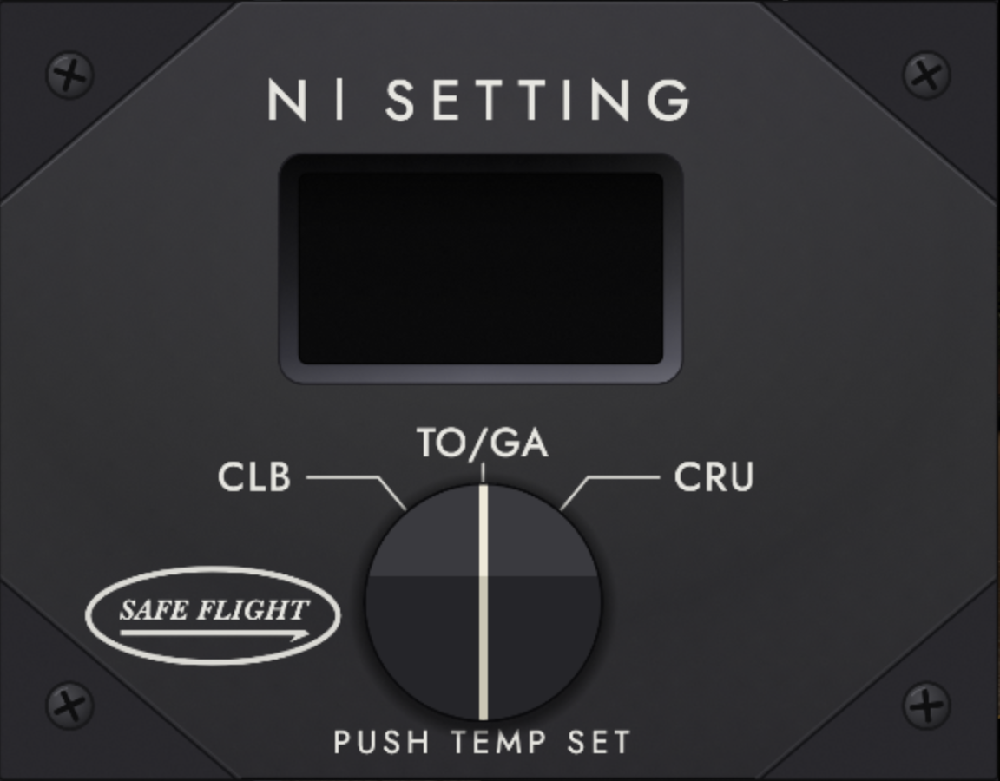
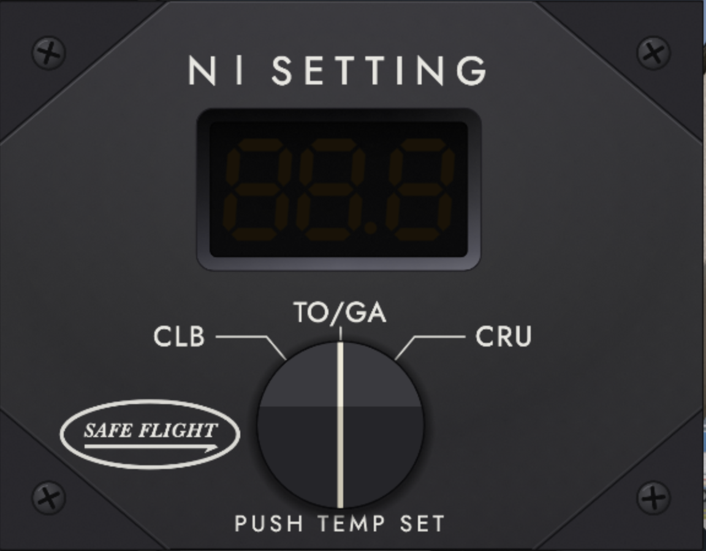
Dead black means no power — the avionics are off, the bus is dead, or the N1 IND breaker is pulled. Nothing is driving the readout.
Blank with the ghost segments visible means the device is powered and has failed. An air data computer or static source has failed and it will not guess. When the source recovers, the display comes back on its own.
Note
A failure that is present at power-up is different: the self-test fails, the display blanks instead of showing 888, and it stays that way. Fixing the air data will not clear it. Pull and reset the N1 IND breaker to run the self-test again.
The readout
Three amber seven-segment digits with a decimal point after the second, sunk in a black recess. Unlit segments glow faintly rather than disappearing, exactly as a real LED display does, which is what makes the failed display distinguishable from an unpowered one.
The readout runs at full daylight intensity until you bring the center instrument lights up, at which point it dims with the rheostat for night flying.
6 Troubleshooting
This section covers problems with the plugin itself. For a display that is dark or dashing during normal operation, see sections 3.10 and 5.7 first — most of those are the device working correctly.
| Symptom | Cause and fix |
|---|---|
| No Safe Flight entry in the Plugins menu | The plugin did not load. Check the folder is at
Resources/plugins/SafeFlightN1/ with mac_x64/
inside it, and clear the macOS quarantine flag (section 2.2).
Log.txt will say whether it loaded. |
| Menu items grayed out | You are not in the TorqueSim CJ525, or the aircraft’s systems have
not finished loading. Wait a few seconds after the flight starts. If it
never enables, Log.txt names the dataref it is waiting on. |
| Window opens but the plate is flat gray with no knob | The assets/ folder is missing or incomplete. Reinstall,
keeping the folder structure intact. |
| Display always dashes, in every mode | The chart files are missing. Check data/ contains all eight
CSV files, and look for a “tables missing or malformed” line
in Log.txt. |
| Display dashes in one mode only | Normal. Check the mode is valid for your phase of flight, that anti-ice is all-on or all-off, and that your temperature and altitude are inside the chart (section 4). |
| Display is dark and will not come back | If the recess is dead black, restore avionics power and check the N1 IND breaker is in. If the ghost segments are visible, it is a latched self-test failure — pull and reset the breaker from the plugin menu. |
| 888 that will not clear | Standby after landing. Press or turn the knob. If it returns to 888 immediately, the self-test is still running — give it five seconds. |
| The number disagrees with a chart | Check you are comparing against the same schedule and anti-ice state, and remember the device interpolates where a chart prints steps. The underlying data is community-sourced and approximate (section 4). |
| Window is off screen, or the wrong shape | Delete settings.ini from the plugin folder and restart. The
window returns to a centered default. |
| Window will not move when dragged | You are on a control. Drag from the plate itself, clear of the knob, the legends and the three live corners. |
Log.txt sits at the top level of your X-Plane 12 folder and is rewritten
every launch. Every message the plugin writes is prefixed SafeFlightN1:,
so searching for that string finds all of them.
7 Developers
The plugin publishes its full state as datarefs and its every control as a command, so a home cockpit can drive a real knob and a real display, and companion scripts can read the target. Nothing here is needed to fly the device.
Published datarefs
Read-only unless noted.
| Dataref | Type | Meaning |
|---|---|---|
sfn1/target_n1 | float | The displayed N1 target in percent, or -1 when there is no valid target |
sfn1/mode | int | Knob position: 0 CLB, 1 TO/GA, 2 CRU |
sfn1/display_state | int | What the readout is showing; see below |
sfn1/selected_temp_c | float | The dialed temperature in °C, or -999 when none is set |
sfn1/rat_c | float | Ram air temperature in °C as the device sees it |
sfn1/air_data_failed | int | 1 when an air data source has failed |
sfn1/breaker_pulled | int | Writable. 1 while the N1 IND breaker is pulled |
display_state | Readout |
|---|---|
| 0 — Off | Nothing drawn; unpowered |
| 1 — Self-test | 888 |
| 2 — Dashes | ––– |
| 3 — RAT | Ram air temperature, knob held |
| 4 — Selected temp | The dialed temperature, blinking |
| 5 — N1 | The target; target_n1 is valid |
| 6 — Fail | Blank but energized |
Commands
| Command | Effect |
|---|---|
sfn1/toggle_window | Show or hide the window |
sfn1/mode_up | One detent toward CRU |
sfn1/mode_down | One detent toward CLB |
sfn1/knob_press | Hold the knob pressed |
sfn1/temp_up | Selected temperature up 1 °C |
sfn1/temp_down | Selected temperature down 1 °C |
sfn1/breaker_pull | Pull the N1 IND breaker |
sfn1/breaker_reset | Reset the N1 IND breaker |
sfn1/breaker_toggle | Pull or reset, whichever applies |
Note
sfn1/knob_press is a hold command: it stays pressed for as
long as the binding is held, so an encoder’s push switch maps to it
directly. Bind the encoder’s rotation to
sfn1/temp_up / temp_down and you have the
real knob’s press-and-rotate behavior. Note that
temp_up / temp_down only take effect on
the ground and while powered.
Driving the device from outside
For test rigs and panel calibration the plugin can be fed synthetic inputs instead
of the aircraft’s. Set sfn1/test_override_enable to 1 and the
device reads these instead of the sim — and runs in any aircraft, not just the
CJ525:
| Dataref | Value |
|---|---|
sfn1/test_override_rat_c | Ram air temperature, °C |
sfn1/test_override_pa_ft | Pressure altitude, ft |
sfn1/test_override_on_ground | 0 airborne, 1 on the ground |
sfn1/test_override_anti_ice | 0 off, 1 partial, 2 all on |
sfn1/test_override_powered | 0 or 1 |
sfn1/test_override_air_data_failed | 0 or 1 |
Set sfn1/test_override_enable back to 0 to hand control to the sim
again. The overrides are always available; they are not a debug build.
The quickest way to exercise all of this is over X-Plane’s UDP interface, with Accept incoming connections enabled in the network settings. The plugin ships a dependency-free helper for exactly that:
python3 scripts/xp_udp.py set sfn1/test_override_enable 1
python3 scripts/xp_udp.py set sfn1/test_override_rat_c 15
python3 scripts/xp_udp.py set sfn1/test_override_pa_ft 0
python3 scripts/xp_udp.py cmnd sfn1/mode_up
python3 scripts/xp_udp.py get sfn1/target_n1 sfn1/display_state8 Credits and Licence
The performance data
The eight N1 schedules this device reads are not the plugin author’s work, and the plugin would have nothing to display without them.
They were transcribed from the TorqueSim Cessna Citation 525 Performance Manual, a community-built chart set assembled and published free by hornetaircraft, with Aviationsocal, Kaboom, Jetpipeoverheat and Cptlee assisting. It is not a TorqueSim, X-Aviation or Textron document and it does not ship with the aircraft; it is a free download from the X-Pilot forums:
forums.x-pilot.com/files/file/1613-torquesim-cessna-citation-525-performance-manual/
If you want these schedules for a project of your own, please take them from the source above and credit its authors.
Licence
The plugin itself is MIT licensed; the full text is in LICENSE
beside this manual. The thrust tables in data/ are covered
separately by data/LICENSE.md — no ownership of the
performance figures is claimed.
The faceplate and knob artwork are an original recreation. The legend typeface is Jost, under the SIL Open Font License.
Disclaimer
Not affiliated with, endorsed by, or supported by Safe Flight Instrument, LLC, Textron Aviation, or TorqueSim. The performance data is community-sourced and approximate. This is an advisory simulation for entertainment — not for real world use.